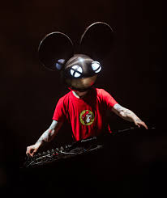

Zimmerman ha ganado 15 premios y ha recibido 42 nominaciones.
| Año | Premio | Resultado |
|---|---|---|
| 2008 | Mejor artista Electro house | Ganó |
| 2008 | Mejor artista Progressive house | Ganó |
| 2008 | Mejor single por "Not exactly" | Ganó |
| 2008 | Mejor remix por "Community Funk" | Nominado |
| 2009 | Mejor artista Electro house | Ganó |
| 2009 | Mejor artista Progressive house | Ganó |
| Año | Premio | Resultado |
|---|---|---|
| 2008 | Mejor DJ electro house | Ganó |
| 2008 | Mejor artista Breakthrough | Nominado |
| 2009 | Mejor DJ electro house | Nominado |
| 2010 | Mejor DJ electro house | Ganó |
| 2010 | Mejor DJ internacional | Ganó |
| 2011 | Mejor DJ electro house | Ganó |
| 2012 | Mejor DJ electro house | Nominado |
| 2013 | Mejor DJ internacional | Nominado |
| Año | Premio | Resultado |
|---|---|---|
| 2009 | Mejor remix por "The longest road" Morgan Page | Nominado |
| 2012 | Mejor remix por "Rope" Foo Fighters | Nominado |
| 2012 | Mejor grabacion dance por "Raise your weapon" | Nominado |
| 2012 | Mejor album de musica electrónica por "4 x 4 = 12" | Nominado |
| 2013 | Mejor album de musica electrónica por “>album title goes here<” | Nominado |
| 2015 | Mejor album de musica electrónica por "While (1<2)" | Nominado |
| Año | Premio | Resultado |
|---|---|---|
| 2010 | Mejor DJ canadiense | Ganó |
| 2010 | Mejor artista | Ganó |
| 2010 | Mejor Dj mundial | Nominado |
| 2010 | Mejor productor musical | Nominado |
| 2010 | Mejor track de electronica por "Ghosts ´n stuff" | Ganó |
| 2010 | Mejor video musical por "Ghosts ´n stuff" | Nominado |
| 2010 | Mejor track de progressive/techno por "Strobe" | Nominado |
| Año | Premio | Resultado |
|---|---|---|
| 2008 | Mejor cancion del año por "After hours" | Nominado |
| 2008 | Mejor cancion del año por "All you ever want" | Ganó |
| 2009 | Mejor cancion del año por "Random album title" | Ganó |
| 2009 | Mejor cancion del año por "Move for me" | Nominado |
| 2010 | Mejor cancion del año por "For lack of a better name" | Ganó |
| 2012 | Artista del año | Nominado |
| 2013 | Artista del año | Nominado |
| 2013 | Mejor cancion del año por "After hours" | Nominado |
| 2015 | Artista del año | Nominado |
| Año | Premio | Resultado |
|---|---|---|
| 2018 | Streamer en Twitch del año | Nominado |
| Año | Premio | Resultado |
|---|---|---|
| 2010 | Mejor DJ del mundo | Nominado |